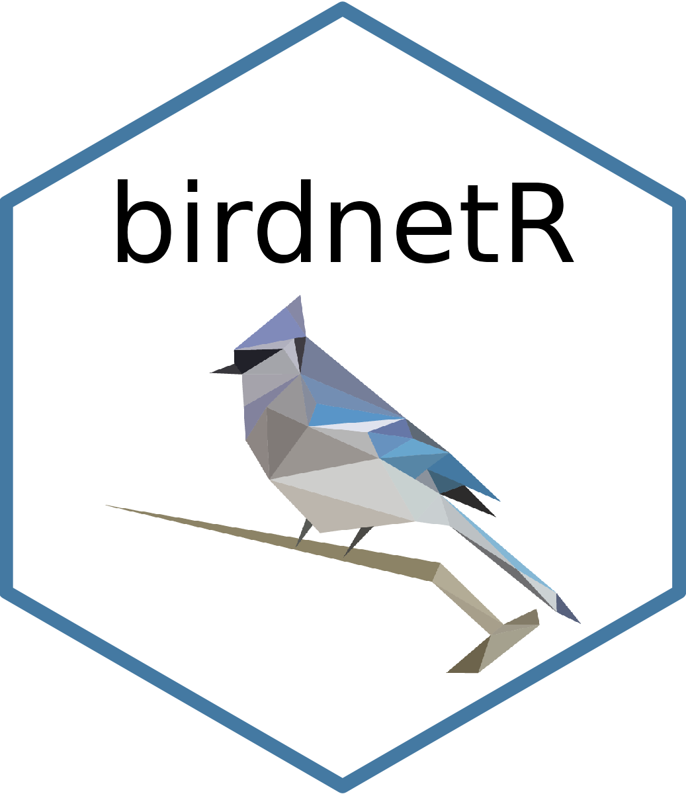

Read species labels from a file
get_species_from_file.RdThis is a convenience function to read species labels from a file.
Value
A vector with class labels e.g. c("Cyanocitta cristata_Blue Jay", "Zenaida macroura_Mourning Dove")
Examples
# Read a custom species file
get_species_from_file(system.file("extdata", "species_list.txt", package = "birdnetR"))
#> List of 22
#> $ python : chr "/usr/bin/python3"
#> $ libpython : chr "/usr/lib/python3.10/config-3.10-x86_64-linux-gnu/libpython3.10.so"
#> $ pythonhome : chr "//usr://usr"
#> $ pythonpath : chr "/home/runner/work/_temp/Library/reticulate/config:/usr/lib/python310.zip:/usr/lib/python3.10:/usr/lib/python3.1"| __truncated__
#> $ prefix : chr "/usr"
#> $ exec_prefix : chr "/usr"
#> $ base_exec_prefix : chr "/usr"
#> $ virtualenv : chr ""
#> $ virtualenv_activate : chr ""
#> $ executable : chr "/usr/bin/python3"
#> $ base_executable : chr "/usr/bin/python3"
#> $ version_string : chr "3.10.12 (main, Jul 29 2024, 16:56:48) [GCC 11.4.0]"
#> $ version : chr "3.10"
#> $ architecture : chr "64bit"
#> $ anaconda : logi FALSE
#> $ conda : chr "False"
#> $ numpy : NULL
#> $ required_module : chr "birdnet"
#> $ required_module_path: NULL
#> $ available : logi TRUE
#> $ python_versions : chr [1:2] "/usr/bin/python3" "/usr/bin/python"
#> $ forced : NULL
#> - attr(*, "class")= chr "py_config"
#> Error: Python module birdnet.utils was not found.
#>
#> Detected Python configuration:
#>
#>
# To access all class labels that are supported in your language,
# you can read in the respective label file
labels_path <- get_labels_path("fr")
#> List of 22
#> $ python : chr "/usr/bin/python3"
#> $ libpython : chr "/usr/lib/python3.10/config-3.10-x86_64-linux-gnu/libpython3.10.so"
#> $ pythonhome : chr "//usr://usr"
#> $ pythonpath : chr "/home/runner/work/_temp/Library/reticulate/config:/usr/lib/python310.zip:/usr/lib/python3.10:/usr/lib/python3.1"| __truncated__
#> $ prefix : chr "/usr"
#> $ exec_prefix : chr "/usr"
#> $ base_exec_prefix : chr "/usr"
#> $ virtualenv : chr ""
#> $ virtualenv_activate : chr ""
#> $ executable : chr "/usr/bin/python3"
#> $ base_executable : chr "/usr/bin/python3"
#> $ version_string : chr "3.10.12 (main, Jul 29 2024, 16:56:48) [GCC 11.4.0]"
#> $ version : chr "3.10"
#> $ architecture : chr "64bit"
#> $ anaconda : logi FALSE
#> $ conda : chr "False"
#> $ numpy : NULL
#> $ required_module : chr "birdnet"
#> $ required_module_path: NULL
#> $ available : logi TRUE
#> $ python_versions : chr [1:2] "/usr/bin/python3" "/usr/bin/python"
#> $ forced : NULL
#> - attr(*, "class")= chr "py_config"
#> Error: Python module birdnet.models was not found.
#>
#> Detected Python configuration:
#>
#>
species_list <- get_species_from_file(labels_path)
#> Error in eval(expr, envir, enclos): object 'labels_path' not found
head(species_list)
#> Error in eval(expr, envir, enclos): object 'species_list' not found